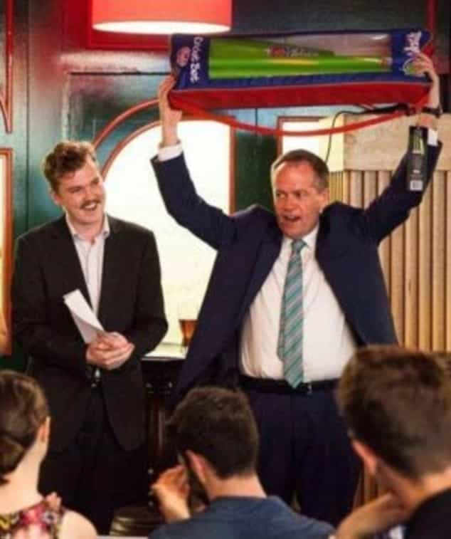
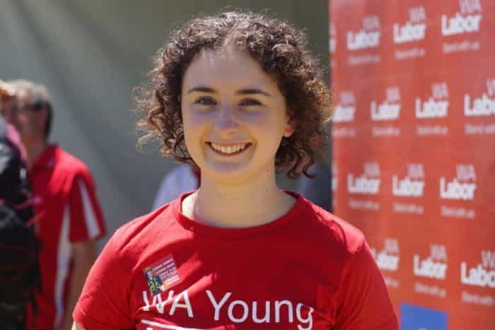
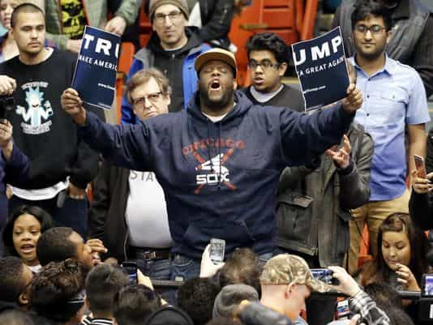
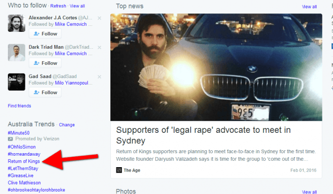

< < < Back
Australian Government Funds Degenerates Who Come To America To Steal Donald Trump Signs – Return Of Kings
Student members of Australia’s socialist Labor Party have been caught out deliberately breaking US electoral laws, working on Bernie Sanders’ campaign as compensated “volunteers” despite not being American citizens. The young SJWs were being subsidized by Australian taxpayers at the time, which constitutes a clear misuse of public funds in their own country. The numerous confessions were recorded by conservative group Project Veritas Action.
Instead of using the substantial amount of money given to them for the intended purpose, an exchange program, at least some of the students were also involved in the tampering, vandalizing and apparent destruction of Donald Trump signs and other materials.
Australian Labor Party volunteers sent to the U.S. to work on Bernie Sanders’ presidential campaign have been secretly filmed stealing Donald Trump and Hilary Clinton hoardings.
Project Veritas Action, a conservative movement website who use undercover journalists to source stories, posted the video of four Australian volunteers bragging about using Australian taxpayer funds for flights, accommodation and daily expenses while working on Democratic senator Bernie Sanders’ presidential campaign.
Former Australian National University Labor Club president Ben Kremer features in the 14 minute video – scrambling in the darkness of night, trying to remove Republican candidate Donald Trump’s campaign signs from private property.
Again, these actions are criminal offenses, particularly as the removal of signs involved trespassing onto private property.
SJWs will break laws and brag about it because reasons
Rather than being the work of naive, inexperienced idealists, those involved in this fraud are veterans of student leftwing politics, often at the very highest level. One of them is Ben Kremer, former President of the Australian National University Labor Club. Here he is pictured with the current leader of the Labor Party, the alternative Prime Minister Bill Shorten:

Another is Rebecca Doyle, President of Young Labor in Western Australia, Australia’s fourth most populous state:

The removal of signs, defrauding of Australian taxpayers, and breaking of US electoral laws may appear far removed from incidents such as violence against Trump supporters in Chicago. However, they need to all be seen in a wider context. When leftists are faced with a candidate they fear most of all, a fire-breathing, no-nonsense figure in the mould of Donald Trump, they believe they can suspend all manner of legal codes and expectations of civility to fundamentally undermine democracy itself.
“But I hate him!” is the sum of what SJWs and other retrograde political categories have to offer in justifying their decisions to either engage in violence and threats of violence against Trump’s willing voters or try to sabotage his campaign in the vein of a Ben Kremer or Rebecca Doyle.
American democracy is under threat, from within and without

“We don’t like you so violence.”
Over the years, Congress has erected many laws designed to keep elections fair and determined by the American people. The nature of a national election is that it for the citizens of that nation, not outside parties like Ben Kremer and Rebecca Doyle. This by no means condones the sort of violent actions we saw in Chicago by American citizens who hate Trump, but it does throw into stark relief pressure from the rest of the world to cut down Trump. Privileged, childish SJW students from Australia are just the tip of the iceberg.
A significant proportion of the general public in places like the United Kingdom have already grotesquely decided that Trump is somehow Hitler. In Britain, this petulant mentality descended into hundreds of thousands of special snowflakes demanding the politically incorrect figure be banned from its shores. Meanwhile, dozens of dictators and hundreds of actually dangerous people are free to enter the UK basically as they wish.
The sensationalization of Trump into cheap 1984-style Two Minute Hate rip-offs will accelerate in the coming months. What is unclear is how many of his supporters will be caught in the cross-fire, either maimed or killed because of the innate intolerance of incontrovertibly anti-democratic SJWs.
Expect far more criminality and violence as Trump edges closer to the nomination… and the Presidency

SJWs and their media enablers used outright slander and threats of serious violence to attack Return of Kings’ proposed meet-ups, just as they have done for months with Trump and his supporters.
A month and a half ago, Roosh and hundreds of you were threatened with real violence for daring to meet as men to discuss life and self-improvement. Only weeks later thousands of Trump supporters, not to mention Donald Trump himself, were also threatened with real violence for meeting peacefully and publicly in furtherance of the democratic process. The battle lines have been clearly set by SJWs: “Your rights to freedom of speech, assembly, and association simply do not exist relative to ours.” If you challenge the narrative, your job, your psychological security, and your personhood are liable to be taken or put in danger.
In between the overt cases of intimidation and “stop your campaign or we will physically attack you,” subterfuge of the Ben Kremer and Rebecca Doyle variety will abound. Instantaneous political expediency trumps both morality and legality for SJWs. The difficulty is that violence in particular is incredibly effective. Those able to contribute the most to Trump and his attempts to renew America, such as middle-aged professionals with kids, are exactly the kinds of people who need to be most responsive to threats of violence in order to protect their families.
Nevertheless, calculated violence is a sign that Trump and the truth he represents chills SJWs to their bones. Every coddled, privileged position they take for granted is currently under siege due to his galvanizing of Middle America, “the silent majority.” Even many of those who will vote for the inevitable Democratic nominee, Hillary Clinton, share a number of Trump’s ideas about where America is heading and where it should be heading instead.
Unfortunately for SJWs, violence or the threatening of it is not going to stop Donald Trump’s march to the Republican nomination and White House.
Read More: Did The Anti-Donald Trump Riot In Chicago Help Trump Cruise To Victory On Tuesday?